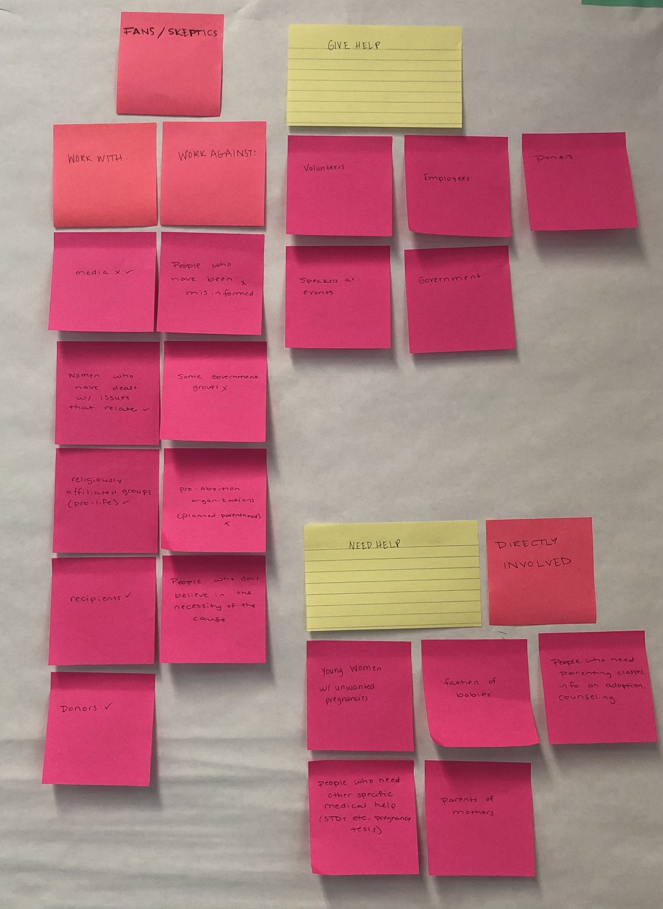
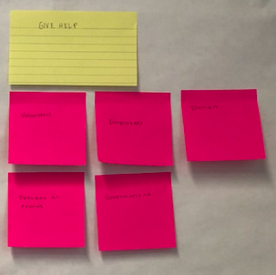
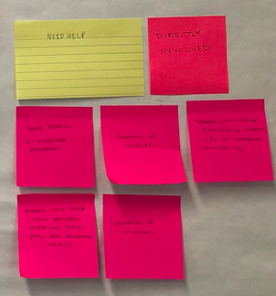
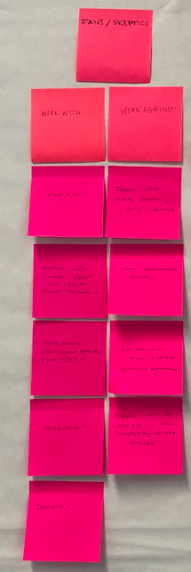

Audience & Goals
Now that I have conducted some research and defined my design challenge -- in this next step I am defining my audience and goals.
Audience
I explored every connection the CPC had within itself and the community; this is how I defined my audience on a broad scale. From there, I narrowed it down into more specific groups and removed anything I felt was unneccesary.

I divided my audience into three main sections:
- Give Help
- Need Help (sub. directly involved)
- Fans/Skeptics (sub. work for/work against

Under the Give Help category, I have listed people that are involved in the orgnaization to a certain capacity and have the ability and/or motivation to help those in need.
- Volunteers
- Employees
- Donors
- Government
- Speakers at events

Need Help emcompasses those who can benefit from the CPC outreach. It is also a subcategory of those who are directlty involved.
- Women with unplanned pregnancies
- Husbands/boyfriends
- Parents of mothers
- People who need other specific medical help: STD testing, pregnancy tests, etc.
- People who need parenting classes, counseling, etc.

In the Fans and Skeptics category I listed any individuals or organizations that may help or hinder the outreach of the CPC
Works With:
- Media
- Women who has gone through similar trauma
- Religiously affiliated groups (pro-life)
- Recipients
- Donors
Works Aginst:
- Media
- Some government groups
- Pro-abortion organizations
- People who don't believe in the necessity of the cause
Overarching Goals
| Client, Audience, Website | |
|---|---|
| Client |
|
| Audience |
|
| Website |
|
Specific Goals
| User | Goal | Content/Action |
|---|---|---|
| Women with unplanned pregnancies. (most likely 18-24, in cohabitating and unmarried relationships, low-income). | A place for women to receive support in the ways that they cannot support themselves. | Counseling, relationship and parenting classes, ultrasounds, pregnancy tests, STD testing, and baby supplies; at no cost to you. |
| New Volunteers (someone who sees the value in the cause). | Increase awareness around the organization and increase donations. | Sharing stories about the organization's impact on lives in the community. Conveying a clear brand identity. |
| Employees and recurring volunteers | Supporting the women who are seeking help. | Assist with classes, distribute resources to the women, provide counseling services for abusive relationships or trauma. |
| Medical Staff | Filling a need. | Performing STD testing, pregnancy tests, and ultrasounds. |
| Participants in events | Spreading awareness about the services and goals of the CPC. Educating the community about a serious need that the CPC is working to fulfill. | Telling stories these women can relate to and members of the community may resonate with and feel pulled to get involved. |